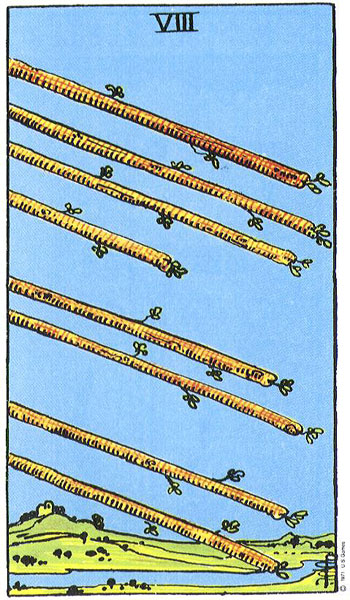
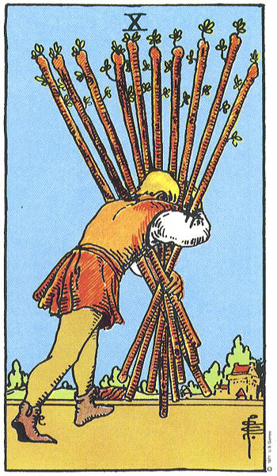
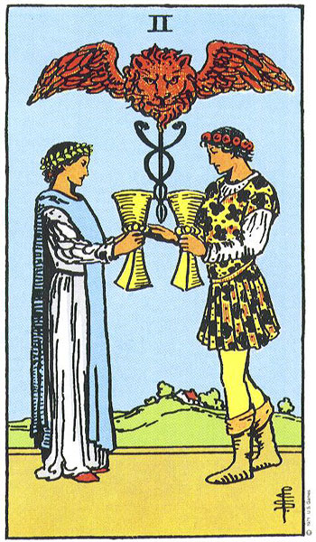
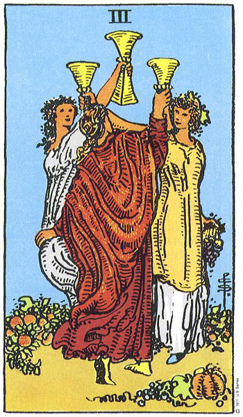
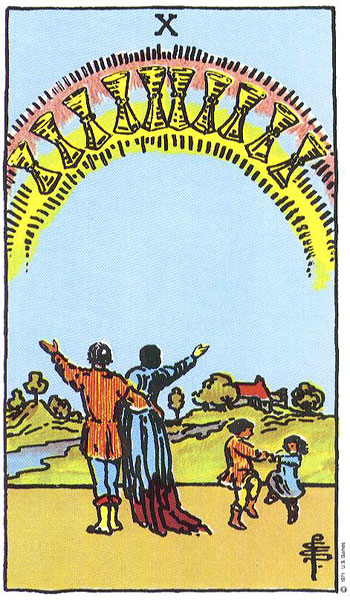
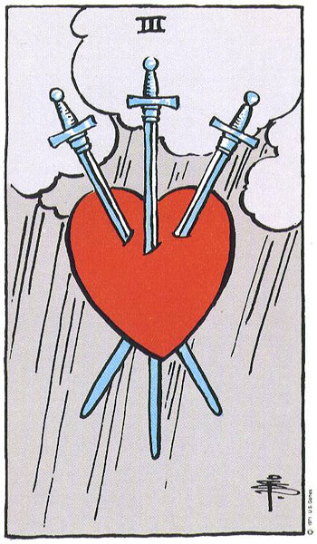
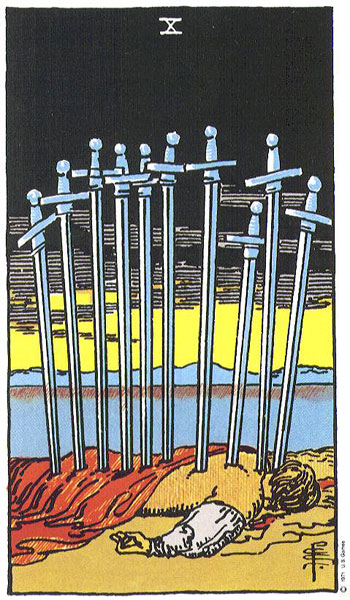
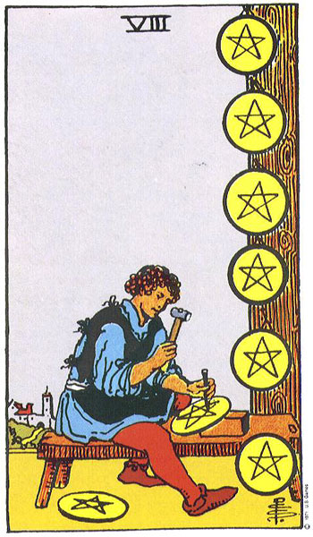
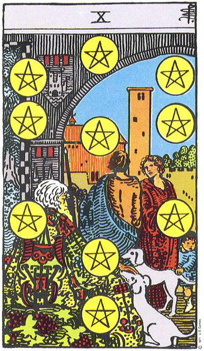

마이너 아르카나 56장
마이너 아르카나 56장 개요
마이너 아르카나는 타로 78장 가운데 56장을 차지하며, 인생의 큰 흐름을 상징하는 메이저 아르카나와 달리 일상의 구체적인 장면을 다룬다. 완드·컵·소드·펜타클이라는 4개의 슈트로 나뉘고, 각 슈트는 에이스부터 10까지의 숫자 카드와 코트 카드로 구성된다. 4원소(불·물·공기·흙)와 1부터 10까지 번호에 담긴 수비(數祕)의 의미가 결합되어, 한 장 한 장이 구체적인 상황을 묘사한다고 본다.
🃏 마이너 4대 슈트 핵심 숫자 카드 갤러리
불(완드), 물(컵), 공기(소드), 흙(펜타클)의 4대 원소가 1부터 10까지 어떻게 발현되는지 대표 카드들로 살펴보세요.
















핵심 한눈에
56장은 4슈트(완드·컵·소드·펜타클)로 나뉘며, 각 슈트는 에이스~10의 숫자 카드와 코트 카드로 이루어진다. 슈트는 각각 불·물·공기·흙의 원소와 열정·감정·생각·물질의 영역에 대응하고, 1~10의 번호는 시작에서 완성으로 이어지는 단계를 나타내는 것으로 해석한다.
📚 난이도별 학습
본인의 수준에 맞춰 탭을 선택하세요. 우측 상단 언어 토글로 영어/일본어/중국어로도 학습할 수 있습니다.
🃏 한 줄로 이해하기
마이너 아르카나는 56장으로 이루어진, 우리 '일상의 자잘한 일들'을 그림으로 보여주는 카드 묶음이야!
🤔 왜 중요할까?
메이저 아르카나가 "인생의 큰 주제"를 말한다면, 마이너 아르카나는 "지금 당장의 일"을 말해. 공부·용돈·친구·다툼처럼 매일 마주치는 일들을 잘게 나눠 보여주니까, 실제로 점 볼 때 가장 자주 나오는 카드들이지. 56장이라 많아 보여도 걱정 마! 슈트 4개와 숫자 1~10이라는 규칙만 알면 의외로 착착 정리돼. 화투나 트럼프 카드랑 구조가 거의 같아서, 카드 놀이 해본 사람은 더 친숙할 거야.🙂 이 장만 이해하면 78장 중 절반이 한꺼번에 손에 들어와!
🌱 꼭 알아둘 말
- 슈트(Suit): 카드를 나누는 네 갈래 종류. 완드·컵·소드·펜타클이 있어.
- 완드(Wands): 불! 열정, 하고 싶은 일, 새로운 도전을 상징해.
- 컵(Cups): 물! 감정, 사랑, 친구 관계, 마음을 다뤄.
- 소드(Swords): 공기! 생각, 말, 다툼, 결정을 나타내.
- 펜타클(Pentacles): 흙! 돈, 결실, 건강 같은 현실적인 것들이야.
📖 쉽게 풀어보기
마이너 아르카나를 학교 동아리에 비유해 볼까? 완드는 "새 일을 벌이는 열정 가득 기획부", 컵은 "친구 마음을 챙기는 상담부", 소드는 "따지고 판단하는 토론부", 펜타클은 "돈과 살림을 챙기는 살림부"랑 비슷해. 그리고 에이스(1)는 동아리 첫날의 설렘, 10은 그 동아리가 이룬 최종 결과물이야. 같은 숫자라도 어느 부(슈트)에 속하냐에 따라 뜻이 달라진단다!
⭐ 한 장 요약
- 마이너 아르카나는 모두 56장이고, 일상의 구체적인 일을 다뤄.
- 네 슈트: 완드(불·일), 컵(물·감정), 소드(공기·생각), 펜타클(흙·돈).
- 슈트마다 에이스(1)부터 10까지 숫자 카드가 있어.
- 숫자는 대체로 시작(1)에서 완성(10)으로 이어지는 흐름이야.
- 슈트(원소) + 숫자를 합치면 카드 한 장의 뜻이 만들어져!
이론 깊이 들어가기
마이너 아르카나의 해석은 크게 두 축, 곧 슈트(원소)와 번호(수비)의 교차로 이루어진다고 본다. 슈트는 4원소론에 뿌리를 둔다. 완드는 불로서 에너지·의지·창조를, 컵은 물로서 감정·사랑·직관을, 소드는 공기로서 지성·언어·갈등을, 펜타클은 흙으로서 물질·노동·신체를 상징한다. 번호는 1에서 10까지 일종의 서사 구조를 이룬다고 해석된다. 에이스(1)는 그 원소의 순수한 씨앗이자 잠재력, 2는 균형과 선택, 3은 성장과 협력, 4는 안정과 토대, 5는 갈등과 시련, 6은 회복과 조화, 7은 평가와 노력, 8은 숙련과 추진, 9는 거의 다 이룬 충만함, 10은 완성 또는 한 주기의 끝으로 본다. 따라서 같은 5라도 완드의 5는 '경쟁'으로, 컵의 5는 '상실의 슬픔'으로 갈라진다. 1910년 무렵 발표된 라이더-웨이트-스미스(Rider-Waite-Smith) 덱은 숫자 카드마다 인물과 장면을 그려 넣어, 그림만 보고도 이야기를 떠올릴 수 있게 만든 것이 큰 특징이다.
핵심 메커니즘
📐 슈트 × 번호의 결합
한 장의 의미는 "원소가 어떤 단계에 있는가"로 읽는다고 본다. 예를 들어 컵(감정)+3은 '함께 기뻐하는 감정의 성장(축하·우정)'으로, 펜타클(물질)+8은 '꾸준히 갈고닦는 노동(기술 연마)'으로 해석한다. 슈트가 '무엇에 대한 것인지'를, 번호가 '그 일이 어느 국면에 있는지'를 알려 주는 구조다. 이 규칙을 알면 56장을 통째로 외우지 않아도 추론으로 의미를 끌어낼 수 있다.
대표 사례
📐 사례 1 — 펜타클 에이스
흙 원소의 시작점으로, 새로운 돈벌이·취업·건강 회복의 '씨앗'이 주어진 상황으로 본다. 라이더-웨이트-스미스 덱에서는 구름 속 손이 큼직한 동전 하나를 내미는 그림으로 그려진다. 실현 가능성이 있는 현실적 기회가 막 열렸다는 신호로 참고하는 경우가 많다.
📐 사례 2 — 소드 10
공기 원소가 10에 이른, 곧 '생각·갈등의 극단적 마무리'로 본다. 그림에서는 등에 여러 자루의 검이 꽂힌 인물이 그려져 있어 고통스러운 종결을 떠올리게 한다. 다만 10은 한 주기의 끝이므로, 더 나빠질 것이 없으니 곧 새벽이 온다는 식의 '바닥과 전환'의 의미로도 함께 참고한다.
현대적 전개
오늘날 시중에는 라이더-웨이트-스미스 계열 외에도 펜타클을 '코인(Coin)' 또는 '디스크(Disk)'로, 완드를 '스태프(Staff)'로 부르는 다양한 덱이 있다. 명칭은 달라도 4원소·1~10이라는 뼈대는 대체로 공유한다. 입문자라면 그림이 풍부한 라이더-웨이트-스미스 계열로 시작해 장면을 이야기처럼 익히는 방식이 흔히 권장된다.
전문가 레벨 이해
마이너 아르카나의 그림 기반 해석은 사실 비교적 최근의 발명에 가깝다. 18~19세기까지 마르세유(Marseille) 계열 덱의 숫자 카드는 슈트 상징을 번호 수만큼 나열한 '핍(pip) 카드'였고, 그림 서사가 없어 주로 원소·수비·점성술적 대응으로 해석되었다. 1909년경 아서 에드워드 웨이트(Arthur Edward Waite)의 기획 아래 화가 파멜라 콜먼 스미스(Pamela Colman Smith)가 모든 숫자 카드에 인물 장면을 그려 넣으면서, '그림을 읽는' 직관적 리딩이 대중화되었다. 이 덱은 황금새벽회(Golden Dawn)의 카발라·점성술 체계를 상당 부분 반영하는데, 슈트를 카발라 생명나무의 네 세계(아칠루트·브리아·예치라·아시아)와, 번호를 10개의 세피로트와 대응시키는 해석 틀이 그 배경에 있다. 다만 이런 대응은 단일한 정설이 아니라 전통마다 변주가 크며, 학술적으로 검증된 체계가 아니라 상징 해석의 한 관습으로 보아야 한다. 따라서 전문 독자는 한 가지 대응표를 절대시하기보다, 슈트의 원소·번호의 단계·그림의 서사라는 여러 단서를 함께 견주어 읽는 태도를 중시한다.
최신 연구·쟁점
심리학적으로 타로 해석은 바넘 효과(누구에게나 들어맞는 듯한 모호한 진술을 자신에게 꼭 맞다고 느끼는 경향)와 확증 편향으로 상당 부분 설명된다는 비판이 있다. 마이너 아르카나의 풍부한 그림은 투사 검사처럼 작용해, 보는 이가 자신의 상황을 그림에 투영하며 의미를 '발견'하게 만든다는 것이다. 이 점은 타로가 미래를 알아맞히는 도구라기보다, 자기 성찰과 대화를 돕는 매개로 쓰일 때 더 건전하게 기능한다는 견해로 이어진다. 어느 쪽이든 마이너 아르카나의 해석은 단정적 예언이 아니라 참고용 상징 언어로 다루는 것이 균형 잡힌 태도로 본다.
관련 분야
- 수비학(Numerology): 1~10의 번호에 단계적 의미를 부여하는 해석의 토대.
- 4원소론·점성술: 불·물·공기·흙의 상징과 슈트의 대응을 설명하는 배경.
- 융 심리학: 그림을 무의식의 투사로 보는 상징·원형 해석의 이론적 틀.
더 읽을거리
- "The Pictorial Key to the Tarot" — Arthur Edward Waite
- "Seventy-Eight Degrees of Wisdom" — Rachel Pollack
- "Tarot for Your Self" — Mary K. Greer
🕹️ 직접 해보기 — 슈트와 원소 분류
각 항목을 알맞은 슈트로 분류하세요. 슈트마다 원소와 다루는 영역이 다릅니다.
🎮 3D 미니게임
이 챕터에서 배운 내용을 게임으로 확인해보세요. 떠 있는 보기 중 정답을 클릭!